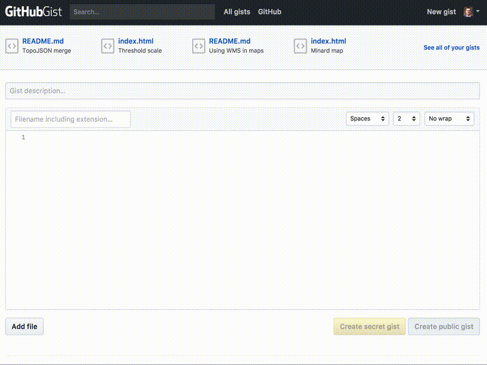

An Introduction to Github
Jason = digital engagement librarian, assistant professor of history
Jason = open source zealot, data visualization, public history, digital history,
❤ data
What is git and Github?
Git is for storage
Git is for development
Git is for sustainability
Github is for collaboration
Github is software
Github is for data
Github provides version control for tracking changes
Version control
- Track changes (or versions) of anything: document, file, image, etc
- Version control allows you to go back to previous versions
Git is a distributed version control. Anyone has local repositories to reconcile with the main server.
The vocabulary of git
Commit a "save" of a version
Repository (or repo) is the project where files live
Branch is a copy of a repo. You can experiment here without affecting the original project. Then you can merge those changes when you're done.
Fork means to copy someone else's repo to build on/improve it and contribute changes back
Clone means you're pulling down a forked repo to your local machine.
Github lets us sync projects locally, and commit changes we can track over time
Let's set up our first Github project together
We can use Github through the terminal, on the desktop, or the website itself
Usually, the files will be local to your machine
We can use the desktop application
Most development projects use the command line
Terminal commands like git clone, git pull, git fetch, git branch
git clone https://github.com/DocNow/twarc.git
We can even do basic mapping in Github using Gists (provided you have a GeoJSON file)

Remember: Github is a business
Remember: Github could disappear
Remember: Github is not preservation
Github is a fine place for sharing data
FiveThirtyEight
The New York Times
Open access research
But data deserves a sustainable home
Institutional repositories: DataLumos, ICPSR, Digital Commons